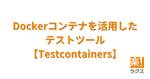
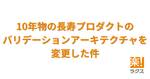

RAKUS Developers Blog | ラクス エンジニアブログ
https://tech-blog.rakus.co.jp/
株式会社ラクスのITエンジニアによる技術ブログです。
フィード

Wiresharkで観察して理解するHTTPS（HTTP over TLS）の仕組み 308
308
RAKUS Developers Blog | ラクス エンジニアブログ
はじめに HTTPS(HTTP Over TLS)とは SSL/TLS HTTPSの流れ 実際に通信を観察 自己署名証明書の用意 サーバーの作成 WireSharkの準備 リクエストを送信して観察 まとめ
21時間前

モバイルエンジニアのためのGoogle I/O 2024とWWDC24を振り返る【モバイルTechCafe イベントレポート】 29
RAKUS Developers Blog | ラクス エンジニアブログ
こんにちは、モバイル開発チームのhyoshです。 弊社では各分野の特定のテーマに沿ってエンジニアが議論する「TechCafe」というイベントを定期開催しています。 そして先日私を含めた弊社モバイル開発チームが2度目となる「モバイルTechCafe」を開催しました！ 今回のイベントでは「Google I/O 2024とWWDC24で気になったセッション」について語り合いました。 弊社のメンバーが事前にまとめてきた情報にしたがって、他の参加者に意見を頂いて語り合いながら学びました。 今回はその内容についてレポートします。
4日前

楽楽精算のインフラチームを紹介します！ 27
RAKUS Developers Blog | ラクス エンジニアブログ
チームの紹介 チームのミッション チーム体制と役割 チームの文化 取り組み事例 オブジェクトストレージのリプレイス 楽楽精算のインターネット通信で利用される帯域の増加対策 今後の展望
5日前

Dockerコンテナを活用したテストツール【Testcontainers】 8
RAKUS Developers Blog | ラクス エンジニアブログ
はじめに Testcontainersとは Testcontainersのメリット ハンズオン 環境設定 goプロジェクトの作成 必要なパッケージのインストール テストコードの作成 コンテナリクエストの設定 コンテナの起動 コンテナのホストとポートの取得 結果の確認 まとめ
12日前

10年物の長寿プロダクトのバリデーションアーキテクチャを変更した件 28
RAKUS Developers Blog | ラクス エンジニアブログ
改善施策を決めるまで 旧アーキテクチャ概要 旧アーキテクチャの問題分析 新アーキテクチャ概要 最後に
13日前

Daggerを使ったprogrammable CI/CD
RAKUS Developers Blog | ラクス エンジニアブログ
はじめに こんにちは！ エンジニア２年目のTKDSです！ この記事ではDaggerについて紹介します。 この記事は課内で行ったLTをもとにしたものです。 はじめに Daggerとは？ アーキテクチャ概要 Dagger Function Dagger Module 実際につかってみる ユースケース１：テストのパイプラインを記述 ユースケース２：DB依存の単体テストでDBのコンテナを用意する まとめ
1ヶ月前
【Playwright】v1.4系の新機能まとめ
RAKUS Developers Blog | ラクス エンジニアブログ
こんにちは、フロントエンド開発課所属のkoki_matsuraです！ 本記事では、E2EテストライブラリであるPlaywrightのv1.40 ~ 最新版v1.43で追加された機能の中から僕の独断と偏見でいくつかを紹介したいと思います。 では早速、紹介していきます！ 以下は目次です。 v1.40の新機能 Test Generatorにアサーションコード生成機能 toBeVisibleアサーション toContainTextアサーション toHaveValueアサーション v1.41の新機能 screenshot関数のstyleオプション toHaveScreenshot関数のstylePath…
3ヶ月前
【Kotlin入門】コレクション関数とラムダ式を活用したシンプルコーディング
RAKUS Developers Blog | ラクス エンジニアブログ
はじめに こんにちは、新卒2年目の菊池（akikuchi_rks）です。 近年、Androidアプリ開発のみならず、サーバーサイドの開発言語としてもKotlinが急速に注目を集めています。私自身もKotlinを使ってサーバーサイドの開発を行っており、豊富な機能やシンプルな文法に魅力を感じています。 Kotlinを使用していて特に感じるのは、そのコレクション関数の充実性です。コレクション操作はプログラミングにおいて頻繁に行われるため、これらの関数が豊富であることはKotlinの特長のひとつと言えると思います。 また、これにラムダ式を組み合わせることで、よりシンプルで効率的なコーディングが可能とな…
3ヶ月前
DBセキュリティ性能検証「検証と結果」編
RAKUS Developers Blog | ラクス エンジニアブログ
※注意：本記事内での計測結果は記載の条件下によるものとなります。異なる環境においては異なる結果が予想されますのでご認識ください。 こんにちは。 株式会社ラクスにて、主に先行技術検証を担当している「技術推進課」という部署に所属している鈴木（@moomooya）です。 ラクスの開発部ではこれまで社内で利用していなかった技術要素を自社の開発に適合するか検証し、ビジネス要求に対して迅速に応えられるようにそなえる 「技術推進プロジェクト」というプロジェクトがあります。 このプロジェクトで「DBセキュリティ」にまつわる検証を行なったので、その報告を共有しようかと思います。 今回はDBセキュリティの中でも、…
3ヶ月前
【初学者向け】ネットワーク構造の基礎：サブネットの基本概念と計算方法
RAKUS Developers Blog | ラクス エンジニアブログ
はじめに 皆さんこんにちは、新卒1年目新米エンジニアのkananpaです。 今回は、ネットワークにおいて重要な概念であるサブネットについて、実際の業務で学ぶ機会があったため、まとめてみました。 私自身、名前は聞いたことがあったものの今回はじめて詳しく調べました。 初学者の方にも理解してもらいやすいようにまとめたため、最後まで読んでいただけるとありがたいです。 はじめに サブネットとは IPアドレスとは サブネットマスクとは ネットワークアドレスの計算方法 PHPによる実装方法 まとめ
3ヶ月前
【ラクス開発部門トップが語る】「顧客視点」を高め、圧倒的な使いやすさを追求したい
RAKUS Developers Blog | ラクス エンジニアブログ
はじめに こんにちは、株式会社ラクス開発本部長の公手です。 普段はブログを書くことが少ないのですが、今回は当社のエンジニアやデザイナーたちが特に大切にしている顧客視点について共有したいと思い、投稿することにしました。 この投稿を通じて、社内のエンジニアやデザイナーに顧客視点の重要性を再確認してもらい、それぞれの役割の中で使い勝手の良いSaaSを開発するためにどのようなアクションを起こすべきかを考えてもらえるきっかけになればとの狙いもありますし、ラクスの開発組織が顧客視点を最優先に考える組織であることを、社外のエンジニアの皆さんにも知っていただければ幸いと考えております。 はじめに ラクスがプロ…
3ヶ月前
22歳になる長寿サービスのUI刷新 ~密結合システムからViewを分離した苦労話~
RAKUS Developers Blog | ラクス エンジニアブログ
こんにちは、メールディーラー開発課のUKoniです。 2023年9月のことですが、弊社で開催した【ラクスMeetUp】持続的改善の実践/UI刷新・SQL改善・EOL対応で登壇させていただきました。 そこで話した、長寿サービスの密結合システムからViewを分離した話をご紹介します。 発表資料 speakerdeck.com 発表資料 概要 作業内容 1. 旧画面のコードから機能一覧を作成する 2. IDEの機能を使用して、共通利用するロジックをメソッドに切り出す 3. 切り出したメソッドのユニットテストを作成する 4. ビューロジックとビジネスロジックを分割する 手順 ビューロジック JavaS…
3ヶ月前
PdM組織の責任者が選ぶ！実務に役立つプロダクトマネジメントおすすめ書籍10選
RAKUS Developers Blog | ラクス エンジニアブログ
はじめに こんにちは。ラクスの経費精算プロダクト「楽楽精算」のプロダクトマネージャー（PdM）組織で責任者をしております稲垣です。 楽楽精算ではプロダクトマネジメントに関する専門組織を設けており、市場や顧客ニーズを迅速に製品に反映できるように努めています。 ※具体的な業務内容はPdMメンバーの記事もご参照ください tech-blog.rakus.co.jp PdMはビジネスと開発の架け橋となってプロダクトの価値を最大化するという役割上、必要とされるスキル範囲も広くなります。 下記に紹介する書籍のような業務やスキルが日々関わってきますので、ご参考になれば幸いです。 はじめに 実務に役立つプロダク…
3ヶ月前
TypeScript5.4の新機能をピックアップ
RAKUS Developers Blog | ラクス エンジニアブログ
はじめに こんにちは。フロントエンド開発課に所属している新卒1年目のm_you_sanと申します。 3月6日にTypeScript5.4がリリースされました。 そこで、今回は個人的に気になった機能についてピックアップして紹介したいと思います。 はじめに 型の絞り込み NoInfer まとめ
3ヶ月前
脱初級ITエンジニアまでの学習方法
RAKUS Developers Blog | ラクス エンジニアブログ
こんにちは。 株式会社ラクスで先行技術検証をしたり、ビジネス部門向けに技術情報を提供する取り組みを行っている「技術推進課」という部署に所属している鈴木（@moomooya）です。 今回は毎年春先の社内ビアバッシュで新人向けに「一歩目の学習方法」として発表している話をしようと思います。 学習とは この記事の対象 学習に対する向き合い方 まず最初は 学習作戦その1「ちょい足し学習」 例）HTTPメソッドを扱ったとき 学習作戦その2「外から情報を仕入れる」 よくある情報源 技術書 技術同人誌 ウェブサイト 勉強会 SNS 飲み会 GitHub 脱初級者 手を動かす（検証と実践） 自由にできるサーバー…
3ヶ月前
ラクスのグローバル開発：これまでの歩みと今後の展望
RAKUS Developers Blog | ラクス エンジニアブログ
ラクスベトナム責任者の寺田です！ 2014年より、ラクスベトナムは、ラクスの開発子会社として共にSaaS開発を進めています。 ラクスでは、今後グローバルな開発の重要性が更に増大すると考えており、今回のブログでは、そんなラクスの日本ーベトナム間のグローバル開発の様子と今後の展望を簡単にお伝えしたいと思います。 ラクスのグローバル開発は、日本とベトナムがお互いにワンチームである意識を強く持ち、開発に取り組んでいる点が特徴です。 その上で、ベトナムチームには、より重要な役割を担う事が期待されています。そのため、ぜひ、これから入社される方と一緒に、開発領域のさらなる拡大や成長を加速させていきたいです！…
3ヶ月前
セキュリティ主要７分野・脅威の進化と対応
RAKUS Developers Blog | ラクス エンジニアブログ
はじめに こんにちは、技術広報の菊池です。 セキュリティの確保は技術的な課題にとどまらず、お客様の満足、さらには企業の存続に直結する重要なトピックスです。 私たちSaaS企業も例外なく、常に変化する脅威にさらされており、日夜対策のアップデートが求められますので、 私も自身の理解を深めるためにキーワードと各分野の歴史をまとめてみました。 本記事で取り上げるセキュリティ主要７分野では、新しい技術の登場と共に、新たな脅威が絶えず発生し、その対策の進歩も伺えました。 今回は、アプリケーション、ネットワーク、エンドポイント、データ、クラウド、アイデンティティとアクセス管理、インシデント対応と復旧のセキュ…
4ヶ月前
PHPerKaigi 2024【参加レポート】
RAKUS Developers Blog | ラクス エンジニアブログ
はじめに メールディーラー開発課のyamamuuuです。 2024/03/7(木) ~ 03/9(土)の3日間に渡ってPHPerKaigi 2024が開催されました。 今回もオンライン・オフライン両方のハイブリッド開催でした。 phperkaigi.jp ラクスはシルバースポンサーとして協賛し、3名が登壇した他、数名のメンバーが参加しました。 今回はラクスからの登壇者本人と参加者によるレポートを紹介させていただきます。 はじめに 参加レポート php-src debug マニュアル 10年モノのレガシーPHPアプリケーションを移植しきるまでの泥臭くも長い軌跡 ウキウキ手作りミニマリストPHP …
4ヶ月前
二段階認証の仕組みと導入時におさえておきたい対策
RAKUS Developers Blog | ラクス エンジニアブログ
はじめに こんにちはこんばんは！ 昨今、セキュリティへの関心が非常に高まっています。 二段階認証を取り入れる企業が多くなってきました。 最近の例で言うと、Githubが2023年3月ごろに二段階認証を義務化したのは記憶に新しいと思います。 そこで、今回は認証の基礎知識をおさらいした上でTOTPを使った二段階認証の仕組みと導入時の注意点について解説します！ ※本記事の内容は、ビアバッシュ（社内の技術共有会）にて登壇発表した内容です。 ビアバッシュの取り組みについては以下の記事を読んでみてください！ tech-blog.rakus.co.jp はじめに 基礎知識 二要素認証とは？ 二段階認証とは？…
4ヶ月前
次世代フレームワークRemixで簡単なフルスタック開発を体験する
RAKUS Developers Blog | ラクス エンジニアブログ
はじめに こんにちは。フロントエンド開発課に所属している新卒1年目のm_you_sanと申します。 最近話題のRemixを使って、シンプルなTodoアプリを作成する方法をご紹介します。 Todoアプリの作成を通じて、簡単なフルスタック開発を体験していただければと思います。 はじめに プロジェクトの作成 モデルの定義 Root Routeについて ルーティングについて 一覧画面の作成 新規追加画面の作成 編集画面の作成 削除機能の追加 まとめ
4ヶ月前
PHPerのための「PHPと型定義」を語り合う【PHP TechCafe イベントレポート】
RAKUS Developers Blog | ラクス エンジニアブログ
弊社で毎月開催し、PHPエンジニアの間で好評いただいているPHP TechCafe。 2023年5月のイベントでは「型定義」について語り合いました。 弊社のメンバーが事前にまとめてきた情報にしたがって、他の参加者に意見を頂いて語り合いながら学びました。 今回はその内容についてレポートします。 rakus.connpass.com PHPと型 静的型付け言語 動的型付け言語 一般的な誤解 PHPの型 単一の式が持つ型 型システムで扱える型 never型について void型について self,parent,static型について resource型について evalでresource型を宣言すると…
4ヶ月前
リアルな雰囲気が分かる！ラクスのエンジニアインターンシップ内容＆体験談紹介
RAKUS Developers Blog | ラクス エンジニアブログ
はじめまして、rks_rtnkです。 ラクスでは毎年、 「Rakus Tech Lab」という チャットアプリ開発体験を行うエンジニアインターンを開催しています。 2023年も4回開催しまして、非常に多くの学生の皆さんに参加いただきました。 今年、運営に携わった私から、2023年のインターンを振り返りつつ、紹介させていただきます。 もくじ 紹介 タイムスケジュール 開発の流れ 成果発表・懇親会 参加者の声 まとめ・所感 終わりに
4ヶ月前
手続き型プログラミングで発生した問題とオブジェクト指向への入門
RAKUS Developers Blog | ラクス エンジニアブログ
こんにちは！新卒1年目のos188です。 私が担当する商材は、リリースから10年以上が経過し、膨大な量のソースコードが存在します。 大部分はオブジェクト指向プログラミングで書かれていますが、 コードを読んで勉強しているとき、古い部分で手続き型プログラミングによって書かれているところを見つけました。 新しい部分と比較すると「読みづらいな、処理を追いかけにくいな」と感じることが多く、 大規模なソースコードだとこんなにも差が出るのかと感心しました。 今回は、手続き型プログラミングを大きなプロジェクトや複雑な処理に適用した際のやりづらさと、オブジェクト指向プログラミングによる解決策について説明します。…
4ヶ月前
社外向けモバイル勉強会を初開催！立ち上げの道のりと得られた学び
RAKUS Developers Blog | ラクス エンジニアブログ
こんにちは、モバイル開発チームのhyoshです。 弊社では各分野の特定のテーマに沿ってエンジニアが議論する「TechCafe」というイベントを定期開催しています。 PHPTechCafe フロントエンドTechCafe そして先日私を含めた弊社モバイル開発チームが初となる「モバイルTechCafe」を開催しました！ rakus.connpass.com 本ブログでは開催までの準備過程や当日の内容についてレポーティングさせていただきます。 TechCafeについて 準備編 テーマ選定 参加者選定 打ち合わせ 当日編 紹介したイベント 複雑さに立ち向かうためのコードリーディング入門 認証体験向上の…
4ヶ月前
【PHP/Laravel】マイグレーションファイルを全て削除するとDB構築時間が99%削減！？
RAKUS Developers Blog | ラクス エンジニアブログ
こんにちは。大阪楽楽開発課のdaina_rksです。 Laravelのマイグレーションを活用して、テーブル定義を更新しているサービスは多いと思います。 しかしサービスが継続するにつれ、気づけば大量のマイグレーションファイルが存在している、、、なんて経験はありませんか？ 私が携わっていたプロジェクトでも同じ悩みに直面していました。 この悩みに対して、私はマイグレーションファイルを全て削除するということを行いました。 今回はそのときの経験について、なぜマイグレーションファイルを削除するに至ったのか、削除するにあたって行なったこと、削除した結果どんな効果があったのかをご紹介します！ マイグレーション…
4ヶ月前
PHPカンファレンス関西 2024【参加レポート】
RAKUS Developers Blog | ラクス エンジニアブログ
はじめに 配配メール開発課moryosukeです。 2024/02/11(日)にPHPカンファレンス関西 2024が開催されました。 ラクスはブロンズスポンサーとして協賛させていただいています。 2024.kphpug.jp ラクスからは5人が登壇した他、多くのメンバーが参加しました。 そこで今回は参加者によるレポート、そしてラクスからの登壇者本人によるレポートを紹介させていただきます。 はじめに 参加レポート はじめてのOSSコントリビュート Laravelでミニマム開発からスタートして個人サービスを利益化するまでの経験談！ RDBアンチパターンと戦う - 削除フラグ 完全攻略ガイド 令和最…
5ヶ月前
PHPerのための「PHP8.3の新機能」を語り合う【PHP TechCafe イベントレポート】
RAKUS Developers Blog | ラクス エンジニアブログ
弊社で毎月開催し、PHPエンジニアの間で好評いただいているPHP TechCafe。2023年8月のイベントでは「PHP8.3の新機能」について語り合いました。弊社のメンバーが事前にまとめてきた情報にしたがって、他の参加者に意見を頂いて語り合いながら学びました。今回はその内容についてレポートします。 rakus.connpass.com PHP8.3 新機能について Marking overridden method オブジェクトを継承していることを示すattributeが追加 ※プロパティのオーバーライドは対象外 Type Class Constants class、interface、tr…
5ヶ月前
Go言語でゼロ値の場合の項目を出し分けする方法とは？
RAKUS Developers Blog | ラクス エンジニアブログ
はじめに 新卒1年目のTKDSです！ 先日，Go言語でjsonで返すレスポンスを作る際，ゼロ値の場合の項目の出し分けを行いたい場面がありました． そこで，encoding/jsonでゼロ値の場合の項目の出し分けを行う方法を調査しました． はじめに 行いたいこと 1. 改変したいフィールドの型をany(interface{})にして，タグにomitemptyを指定する 2. encoding/json/v2 のomitzeroを使う． 3. MarshalJSON()メソッドを実装する. まとめ
5ヶ月前
kind (Kubernetes IN Docker) でクラスタ構築時に済ませておきたいポート設定の基本
RAKUS Developers Blog | ラクス エンジニアブログ
はじめに こんにちは！新卒1年目のTKDSです！ 今回はkindで任意のポートをローカルマシンのポートにマッピングする方法を紹介します． 実際にkindでclusterを作成して動作確認をしながら進めます． はじめに kindとは default 設定でのCluster構築 Cluster作成 deploymentとNodePortの作成 kindの設定ファイルの作成 設定したポートにアクセスする まとめ
5ヶ月前
スムーズな負荷テストのために私たちが実施していること
RAKUS Developers Blog | ラクス エンジニアブログ
こんにちは、配配メール開発エンジニアのhiro_jiです。 突然ですが、負荷テストの進め方ってイメージできますか？ ある程度経験があれば難なく進めることができると思いますが、そうでない場合はそもそも進め方のイメージが湧きづらいかと思います。 かくいう私も最初は何から手を付ければよいか分からなかった記憶があります。。。 そこで今回は負荷テスト初心者の方向けに、私の所属するチームで実施している手順を紹介します！ 負荷テストとは？ 負荷テストのフロー 全体像 方針検討 詳細計画 テスト準備 テスト実施 評価 分析・チューニング おわりに
5ヶ月前